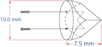

3. Prisms#
You can download the pdf for this page.
3.1. Ray optics#
Here’s a taste of what ray optics is.
Fig. 3.1 Lens flare artifact.#
Fig. 3.2 Lens flare diagram.#
3.2. Prisms#
Prism Type |
Diagram |
|---|---|
Dove |
|
Penta |
|
Retro |
 |
Anamorph |
|
Wedge |
|


3.2.1. Uses of prisms#
3.2.1.1. Dispersion#
Fig. 3.3 Dispersion.#
\[
\theta = (n - 1) \phi
\]
This is desperive because the refractive index is a function of wavelength, i.e. \(n(\lambda)\).
3.2.1.2. Beam bending#
Fig. 3.4 Beam bending.#
This is better than a mirror because total internal reflection (TIR) is wavelength independent.
3.2.1.3. Retro-reflection#
Fig. 3.5 Retro reflection#
3.2.1.4. Image rotation#
Fig. 3.6 Image rotation using prisms.#

Fig. 3.7 A penta prism.#

Fig. 3.8 A dove prism.#
3.2.1.5. Beam scanning#
Fig. 3.9 Beam scanning traces out a circle (top). 2 rotating prisms (Risley prisms), full cone coverage (bottom).#